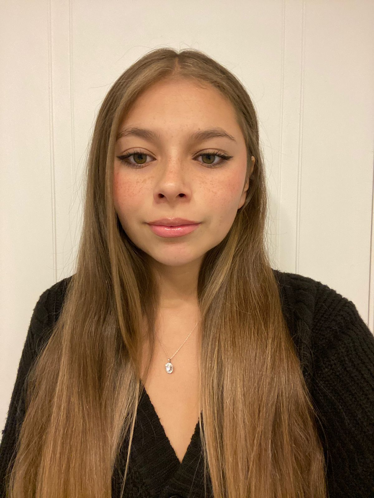

Dorys Aroca Soto
23 años

Información Académica
- Educación básica en Melford College (2005-2014)
- Educación media en Melford College (2015-2018)
- Estudiante de Periodismo en la Pontificia Universidad Católica de Chile (desde el 2021)
- Estudiante de Publicidad en la Pontificia Universidad Católica de Chile (desde el 2021)
Información Laboral
- Maquilladora y Hairstylist en I Love Beauty Spa (2019-2023)
- Community Manager en I Love Beauty Spa (2019-2023)
- Administración en I Love Beauty Spa (2019-2023)
- Maquilladora y Hairstylist en múltiples proyectos de X Corp (2020-2023)
Habilidades
- Creativa
- Buena para trabajar en equipos
- Líder